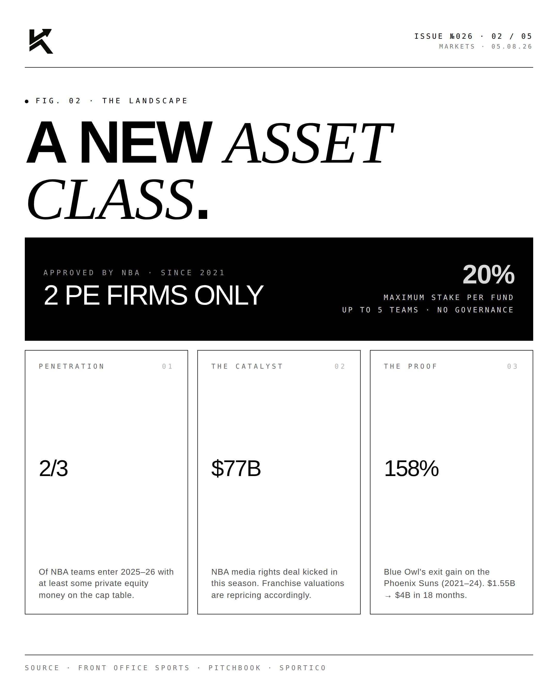
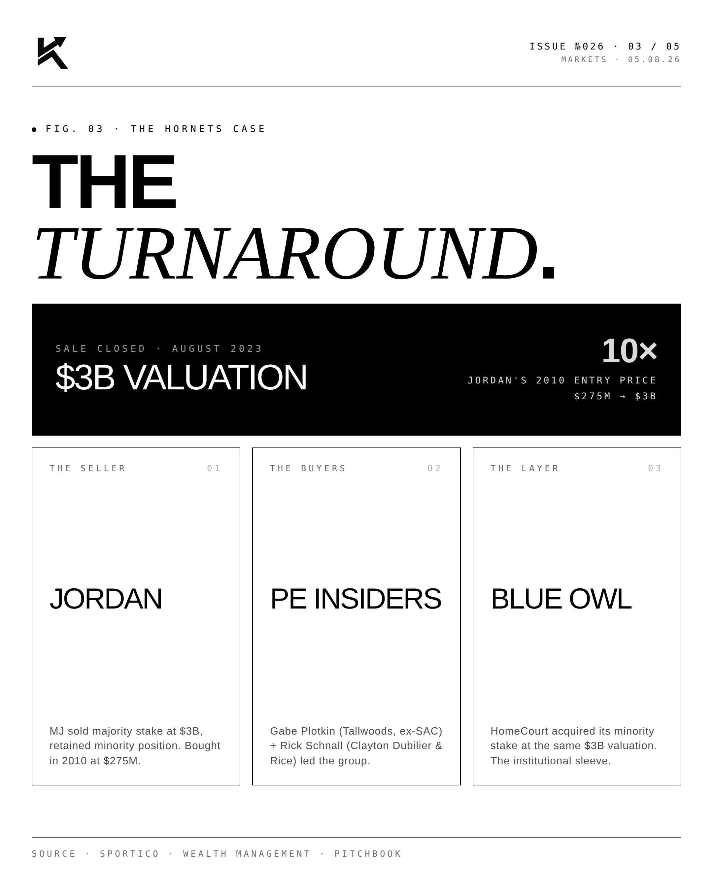
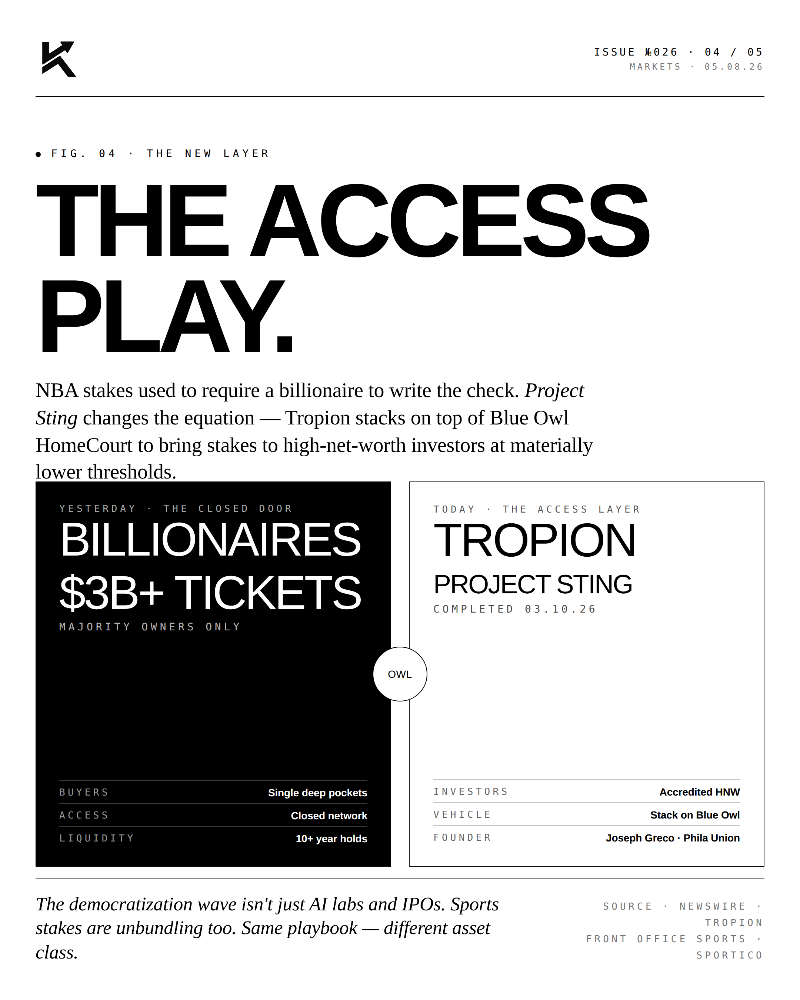
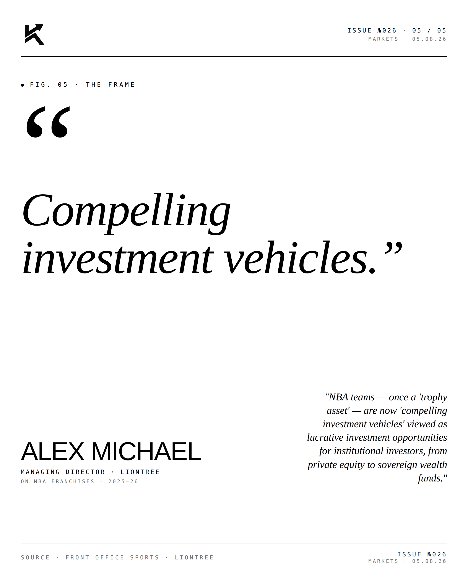

Trophy Assets.
Blue Owl built a $250B+ private credit and real estate platform on a simple insight: own the assets that mission-critical tenants cannot leave. Trophy assets. Long leases. Investment-grade credit.

The Landscape.
Blue Owl's real estate strategy targets a specific corner of the market: long-duration triple-net leases to investment-grade tenants in mission-critical assets. Think distribution centers, life sciences labs, government buildings, regional headquarters. Tenants that can't easily relocate. Leases that compound for decades.

The Hornets.
The bee/hornet metaphor: bees make honey by visiting every flower (broad-portfolio managers). Hornets are larger, fewer in number, but harder to compete with. Blue Owl's positioning is the hornet — fewer transactions, larger checks, deeper relationships, harder to displace.

The Access.
Increasingly, the trophy-asset opportunity set is available not just to institutional LPs but to qualified individual investors. Interval funds, BDCs, and registered fund structures are bringing private real estate exposure to the wealth channel. Blue Owl is one of the largest beneficiaries of that trend.
"Mission-critical
doesn't move."EDITORIALOn Trophy Assets · 2026
"The best real estate isn't the cheapest. It's the kind that mission-critical tenants will pay to stay in for thirty years."


Trophy assets compound. Long leases compound. The hornet model compounds.
Disclosure
Personal commentary and editorial analysis. Not investment advice, not an offer or solicitation.